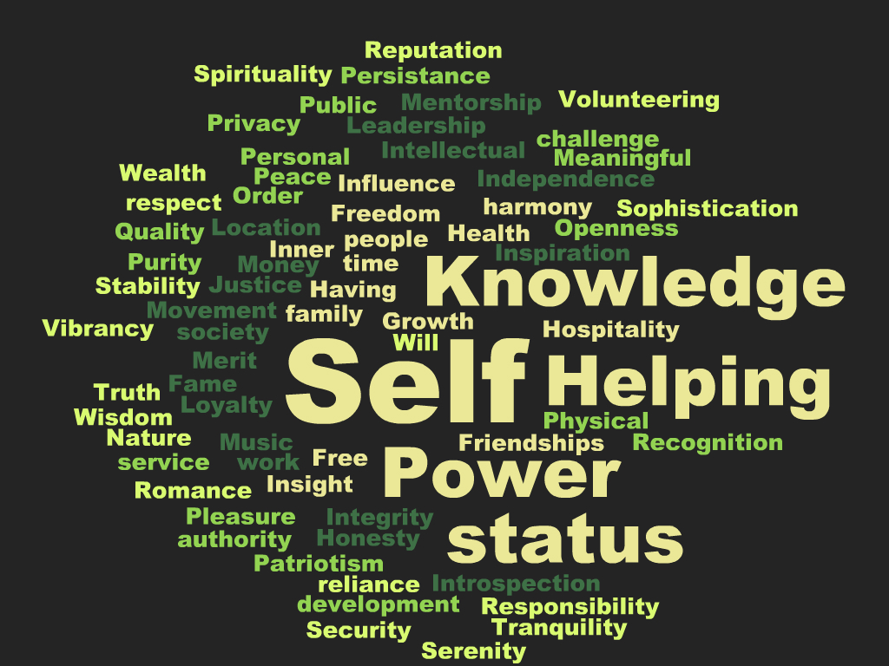

Week 7 Cultural Blog - Affirmation and Stereotype Threat

Exploring my values
Having a family, Inner harmony, Meaningful work. These are the three key values that jumped out at me as I read through the list. Looking back at my 35 years on this earth I can see that times that I was the most happy was when these three values aligned.
Of the three values that stand out, I've decided to write a few sentences on having a family. I've been a husband for 10 years now and a father for 8. My extended family is large and close. I can't think of a single major milestone in my life where family was not involved in either getting me there are celebrating my success at the end.
They encourage me, they push me, they love me even if I fail. They are the center and they make everything worth it. I strive to be a great husband and father and I work to make sure my family is taken care of. They are my life.
On a scale of 1 to 5 with 5 being that I agree, I would say that I am on the 5 end of the scale every time when it comes to my family. I would not be attending DBC if it was not for them and their support. I always do my best to love and support them.
Removing Stereotype threat by focusing on my values
Coming to DBC is a scary thing and I have preconceived ideas of how I should do and what constitutes success while I'm in San Francisco and shortly after graduation. I'm an introvert and a nerd so I worry about a lot of stuff.
My hope is that my family's support and love keeps me focused and working hard no matter the outcome. They have never considered me a failure and they never will. That is heartening to me. I plan to focus on them a lot as things get hard. I want them to be proud of me and I want this to be an avenue to greater things for myself and them.
Whenever I am down I plan on thinking about the new adventures DBC will allow for my family and I. I plan to keep them for most in my mind and remember that they are rooting for me to not only succeed but to enjoy this once in a life time experience.